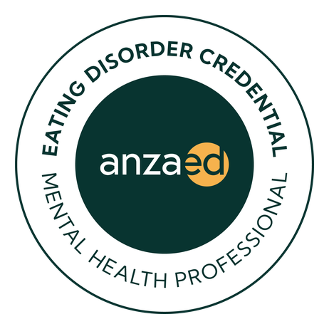
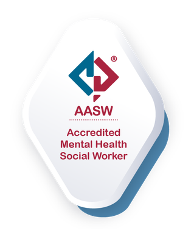
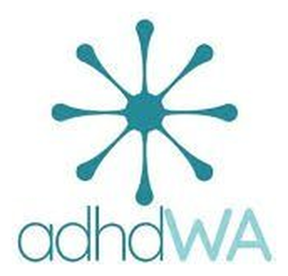
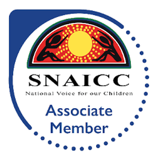

The signal that runs quiet
When hunger, fullness and “I need to eat” are hard to read, so eating becomes guesswork, or gets forgotten until it’s urgent. Interoception is a skill that can be noticed and gently rebuilt.
Specialised, neurodivergent-affirming therapy for the overlap that’s so often missed, where ADHD, eating and body image are one story.
Now welcoming new clients
We work with the brain you actually have.
If you’re neurodivergent, eating can be tangled up with how your brain works, not a character flaw. Many ADHDers find that hunger and fullness signals run quiet or arrive late, that food becomes the nearest place to put a big feeling, or that a “good eating day” depends entirely on whether the day itself felt regulated.
Most eating support was built for a steady, predictable signal. ADHD brains don’t always run steady, so the usual advice (“just listen to your body”, “everything in moderation”) can land as a rulebook that was never built for you. This work starts where that rulebook ends.
The body’s sense of its own signals — hunger, fullness, “I need to eat”. In many ADHD brains it runs quiet or late, so eating becomes guesswork. It’s increasingly recognised as one of the threads linking ADHD and changes in eating, and it’s a skill that can be gently rebuilt, not a flaw to fix.
General information, not a diagnosis.
Any of these? You’re in the right room, and you don’t need a diagnosis, or all the words, to start.
Some of the patterns we hold here — and the kinder reading of each one.
When hunger, fullness and “I need to eat” are hard to read, so eating becomes guesswork, or gets forgotten until it’s urgent. Interoception is a skill that can be noticed and gently rebuilt.
For sensitive nervous systems, a small remark about food or body can flip a whole day. That’s not you being “too sensitive”. It’s a nervous system turned up loud, with food the nearest place to put it.
Appetite quiet all day, then arriving all at once after the meds wear off. It’s a signal that switched off and came back loud, not a discipline problem.
When executive function is stretched, regular eating can fall through the cracks. We build scaffolding that fits the day you actually have.
Warm, unhurried and built for a real ADHD day, not an idealised one: we start with the whole picture, work with your appetite and attention as they actually are rather than against them, and grow eating supports that still hold when focus and hunger both run unpredictable. The first step is the same gentle one for everyone. See how it works →
Our gentle starter guide, When food stuff is brain stuff: what the overlap can look like, and a few kind places to begin. Free when you join, and you can leave any time.
Standard 55-minute session $200. Medicare rebates may be available for eligible clients with the right GP plan. You can start privately with no referral, or we’ll help you sort a plan for rebates.
No. You don’t need a diagnosis, or to be certain, to begin. We work with where ADHD and eating meet, diagnosed, suspected, or just a feeling that the usual advice never fit.
Yes. Lauren is an ANZAED Credentialed Eating Disorder Clinician and Accredited Mental Health Social Worker (AMHSW). We also hold disordered eating and body distress that may not meet a formal eating-disorder threshold.
Medicare rebates may be available for eligible clients with a valid GP Mental Health Treatment Plan or an eligible Eating Disorder Treatment and Management Plan. Out-of-pocket costs may apply, your GP can help you find the right pathway.
Both, in person in Nedlands, and by telehealth across Australia where clinically appropriate.
Accredited, credentialed & in good company




Not sure if it’s “an eating disorder”? You don’t need to be sure to begin. Autistic or AuDHD too? See autism, ARFID & eating, or read more about eating disorder & body image therapy.
ADHD support → Eating & body image → See all pathways → Just diagnosed? →
Body Belonging Clinic is not an emergency or crisis service. If you or someone else is in immediate danger, call 000. For 24/7 support: Lifeline 13 11 14, 13YARN 13 92 76, Kids Helpline 1800 55 1800, or the Butterfly Foundation National Helpline 1800 33 4673.